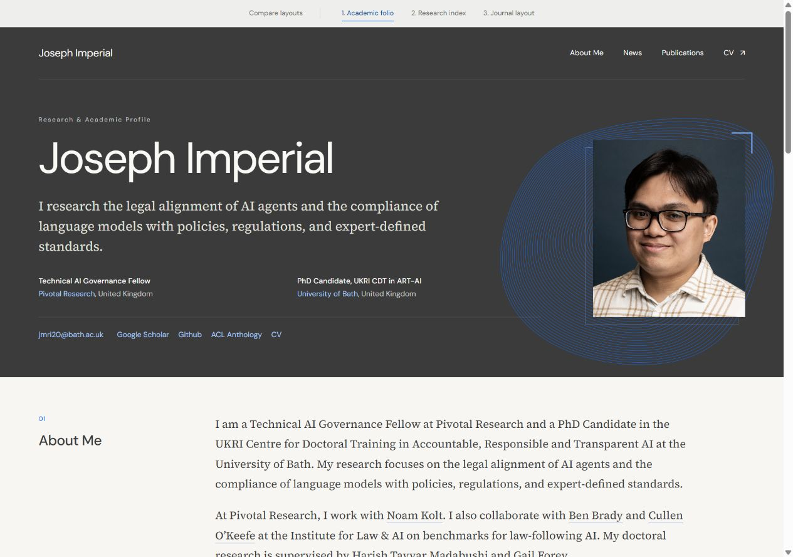

1. Academic folio
A charcoal masthead, blue geometric linework, and an ivory reading surface. Biography and research lead into the publications.
Open layoutJoseph Imperial
Charcoal, ivory, and blue. Three distinct layouts for your research and academic profile.
Open each layout to see the full page. The navigation at the top lets you switch between options.